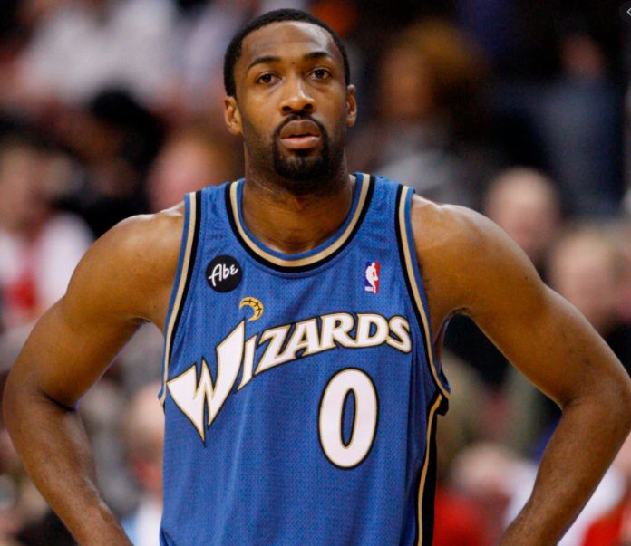
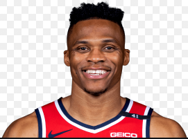

Wizards

The Washington Wizards are an American professional basketball team based in Washington, D.C. The Wizards compete in the National Basketball Association (NBA) as a member of the league's Eastern Conference Southeast Division. The team plays its home games at the Capital One Arena, in the Chinatown neighborhood of Washington, D.C. The franchise was established in 1961 as the Chicago Packers based in Chicago, Illinois, and were renamed to Chicago Zephyrs the following season. In 1963, they relocated to Baltimore, Maryland, and became the Baltimore Bullets, taking the name from a previous team of the same name. In 1973, the team changed its name to the Capital Bullets to reflect their move to the Washington metropolitan area, and then to Washington Bullets in the following season. In 1997, they rebranded themselves as the Wizards. The Wizards have appeared in four NBA Finals, and won in 1978. They have had a total of 28 playoff appearances, won four conference titles (1971, 1975, 1978, 1979), and seven division titles (1971, 1972, 1973, 1974, 1975, 1979, 2017). Their best season came in 1975 with a record of 60–22. Wes Unseld is the only player in franchise history to become the MVP (1969), and win the Finals MVP award (1978). Four players (Walt Bellamy, Terry Dischinger, Earl Monroe, and Wes Unseld) have won the Rookie of the Year award. Masai Ujiri replaced Colangelo in 2013 and helped herald a new era of success, led by a backcourt duo of DeMar DeRozan and Kyle Lowry. The Raptors returned to the playoffs the following year and became a consistent playoff team in every year of Ujiri's tenure. Under Ujiri, the team also won five Division titles and registered their most successful regular season in 2018. However, the team's failure to reach the NBA Finals prompted Ujiri to fire head coach Dwane Casey after the 2018 playoffs concluded and conduct the high-profile trade of DeRozan for Kawhi Leonard and Danny Green later that summer, as well as acquiring Marc Gasol before the trade deadline. In the 2019 playoffs, the Raptors won their first Eastern Conference title and advanced to their first NBA Finals, where they won their first NBA championship.
Gilbert Jay Arenas Jr. ( born January 6, 1982) is an American former professional basketball player. Arenas attended Grant High School in the Valley Glen district of Los Angeles, and accepted a scholarship offer to the University of Arizona late in his junior year. He entered the 2001 NBA draft and was selected in the second round (31st pick) by the Golden State Warriors. Arenas is a three-time NBA All-Star, three-time member of the All-NBA Teams, and was voted the NBA Most Improved Player in the 2002–03 season. Arenas was nicknamed "Agent Zero", due to his former jersey number and his late-game shot-making ability. He also was nicknamed "Hibachi", a nod to the small Japanese barbequing device, which literally translates to "bowl of fire." Both names quickly became fan favorites during his time in the Washington, D.C. area. He has also been nicknamed "Gilby." Arenas was suspended for most of the 2009–10 NBA season because of handgun violations stemming from an episode on December 24, 2009, and for subsequent actions that appeared to make light of this episode. In late 2010, Arenas was traded to the Orlando Magic. After the 2011 NBA lockout, Arenas was the first NBA player to be waived under the "amnesty clause." He signed with the Memphis Grizzlies for the 2011–12 NBA season. Following the end of the season, he signed with the Shanghai Sharks of the Chinese Basketball Association and played one season before retiring. Off the court, Carter established the Embassy of Hope Foundation, assisting children and their families in Florida, New Jersey, and Ontario. He was recognized in 2000 as Child Advocate of the Year by the Children's Home Society, and he received the Florida Governor's Points of Light award in 2007 for his philanthropy in his home state.
Russell Westbrook III (born November 12, 1988) is an American professional basketball player for the Washington Wizards of the National Basketball Association (NBA). He is a nine-time NBA All-Star and earned the NBA Most Valuable Player Award for the 2016–17 season. He is also an eight-time All-NBA Team member, led the league in scoring in 2014–15 and 2016–17, and won back-to-back NBA All-Star Game Most Valuable Player awards in 2015 and 2016. In 2017, the year he won the league MVP award, Westbrook became one of two players in NBA history to average a triple-double for a season, along with Oscar Robertson in 1962. He also set a record for the most triple-doubles in a season, with 42. He went on to average a triple-double the following two seasons also, as well as lead the league in assists and become the first player to lead the league in points and assists in multiple seasons. He ranks second all-time in career triple-doubles in NBA history. Westbrook played college basketball for the UCLA Bruins and earned third-team all-conference honors in the Pac-10. He was selected with the fourth overall pick in the 2008 NBA draft by the Seattle SuperSonics, who then relocated to Oklahoma City that same week. Westbrook has represented the United States national team twice, winning gold medals in the 2010 FIBA World Championship and the 2012 Olympics. In 2019, he was traded to the Houston Rockets and played one season there before being traded again to Washington in 2020.